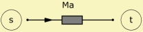

|
 |
| Purpose | Acoustic mass |
| Type | Network element (2 pole) |
| Domain | Acoustic |
| Used in | System |
AcouMass 'Any Name'
Node=s
Ma=
The AcouMass is a two-pole component and installs an acoustic mass in the network. This element can be used for modeling acoustic structures if the wavelength is large compared to the dimensions. In modeling acoustic structures, the AcouMass is practical for taking into account effects such as obstructions, bends, etc. (see examples at Ma=).
In the frequency domain, the pressure difference p across the acoustic mass Ma is p = jω·Ma·V, in which ω = 2πf is the frequency and V is the volume-velocity.
The lumped acoustic mass is treated as an inductance, if, the flow corresponds to the volume-velocity and the potential to the pressure.
In order to understand the acoustic mass, imagine an air-volume being accelerated and not compressed. The dual case, i.e. compression, would be an acoustic compliance (see AcouCompliance).
See at Ma= for details and examples.